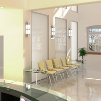

Über uns



Ob Sie eine hartnäckige Erkältung plagt oder Sie eine schwere Krankheit haben – wir kümmern uns um Sie. Dr. Bloemkamp und sein Praxisteam sorgen dafür, dass Sie so schnell wie möglich wieder genesen. Dabei steht das persönliche Gespräch im Vordergrund, nicht das Verschreiben von Medikamenten oder die Nutzung von Geräten.
Bei uns bekommen Sie die medizinisch notwendige Behandlung, nichts Überflüssiges. Auch bei Impfungen und Vorsorge-Untersuchungen sind wir für Sie da.
Rufen sie an oder schreiben Sie uns ein Mail.